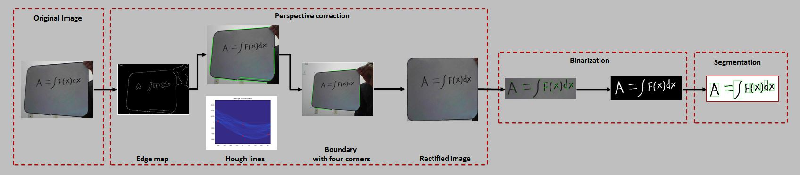

Typically most people find it comfortable to derive and think mathematics while writing either on paper or on a white-board. To be able to communicate these mathematical ideas with other people, it is beneficial to typeset it using standard tools like LaTex. However, transferring the content into this format can be cumbersome and need considerable human effort and time.
Hence, we propose to build an automated system that converts the mathematical equations in an image into LaTex using the techniques of computer vision and machine learning for pattern recognition


Block Diagram
Perspective Correction
Binarization
Segmentation
Symbol Classification
Structure Recognition
All the steps are discussed in detailed in the following sections.
Pre-processing

Canny edges: Edges present in the image are found using canny edge detection technique.
Hough transform: The lines corresponding to the clip-board boundary are determined from these edges using Hough transformation.
Boundary: The four corner points are found by determining the intersection of the boundary lines.
Homography: The four points so determined are used to correct the perspective distortion using Homography.
Binary image: The image is then binarized with a threshold on intensity.
Corners: Harris features are detected on this image to obtain the cluster center of the text.
Image cropping: Image is cropped around this cluster center to get the text box.
Connected components: The text is segmented and each character is extracted from this text box
Classification
Canny edges: Edges present in the image are found using canny edge detection technique. Hough transform: The lines corresponding to the clip-board boundary are determined from these edges using Hough transformation. Boundary: The four corner points are found by determining the intersection of the boundary lines. Homography: The four points so determined are used to correct the perspective distortion using Homography. Binary image: The image is then binarized with a threshold on intensity. Corners: Harris features are detected on this image to obtain the cluster center of the text. Image cropping: Image is cropped around this cluster center to get the text box. Connected components: The text is segmented and each character is extracted from this text box